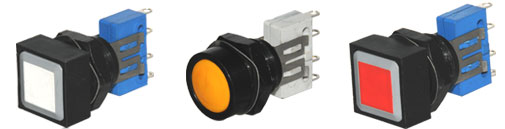
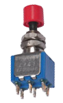
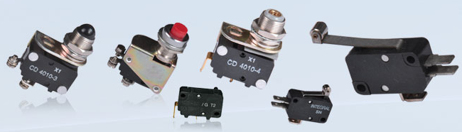
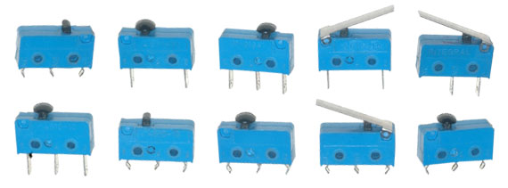
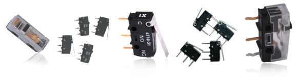
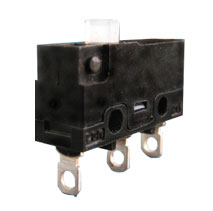
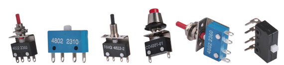
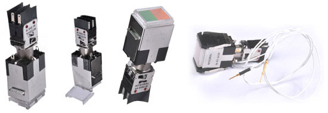
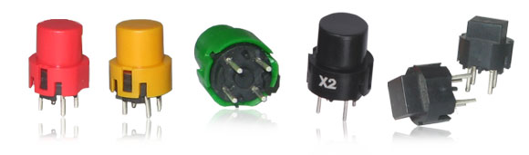

| Push Button Switches | |
|  |
Series 27
Description: Integral Series27 Push Button Switches is a unique design wherein the operative portion is separate from the Switch Element.The Basic Switch Series 49 is used as SWITCH ELEMENT. The all metal Push Button is built for rugged operation in Machine tools and can be offered with Plunger of standard colours like White, Red, Yellow, Green, etc,. The Push Button can be fixed on the panel(dia 16 hole) and the Switch Element is ‘clicked’ on to the same behind the Panel, this offers the advantage of replacing only the Switch Element at the customer end in the field, thereby saving cost. The Switching Element is Integral Series 49 Micro Reset Switch which is a snap acting momentary switch suitable for low level and power level switching. High switching reliablity is built into the design of the switch. By using a double make double-break design, the current rating is increased and the switch can also be used for DC switching. Low contact resistance and protection against surge currents, due to INDUCTIVE and CAPACITANCE loading, is ensured by the design. |
| Push Button Switches(Alternate) | |
|  |
Series 60
Description: Integral Series 60 Push Button Switches are designed to incorporate all the advantages of the time tested Toggle switches. The actuation is Push to On / Push to Off and the cap size and colour can be selected to match the front panel requirements. The switches are also available for direct P.C.B. Mounting and provide an elegant and robust way to switch-on equipments. |
| Micro Switches | |
|  |
Series 40
Description: Integral Series 40 Micro Switch is a heavy duty switch with an extra long life spring mechanism. (Has successfully been tested up to 14 million cycles) High reliability is designed into the switch which can be used in a wide variety of application such as Industrial Equipments, Business Machines, Home Appliances etc. |
|  |
Series 46
Description: Integral Series 46 Micro Switches are characterized by their high functional reliability and switching accuracy. |
|  |
Series 47
Description: Integral Series 47 Micro Switch is a snap acting single pole change over switch actuated by plunger. It is a sensitive type switch intended for use in AC and DC applications, suitable for industrial and Commercial Equipment, Communication Equipment, Vending Machines, Security Systems, Data Systems, Medical Equipment, Cassette Recorders, VCR's etc. The switch is ideal due to its small size, lowg operating force and high reliability. |
|  |
Series 66
Description: Integral Series 66 Micro Switches are characterized by their high functional reliability and switching accuracy. Can be used for Office Equipment, Industrial Machinery, Household Equipment. |
| Micro Reset Switches | |
|  |
Series 48 - Solder / PCB Horizontal Types
Description: Integral Series 48 Micro Reset Switch is a snap acting momentary switch suitable for low level and power level switching. High switching reliability is built into the design of the switch. By using a double-make double-break design, the current rating is increased and the switch can also be used for DC switching. Low contact resistance and protection against surge currents, as in Inductive and Capacitance loading, is ensured by the design. |
| Micro Push Switches | |

|
Series 48
Description: Integral Micro Push Button Switch are build with high reliable Micro Switches with Snap Action momentery with butterfly Mechanism, Double Make Double Break. Switching function helps the switch to use in higher current rating & D.C application in small volume. The switches can be used in Inductive, capacitance loading and against surge current since it is protected by its design. Housing and accessories are made with fine quality of engg. Plastics for their ultimate end use. |
| Push Button(Illuminated) | |
|  |
Series 64
Description: Integral Series 64 Illuminated Push Button Switches are of modular construction giving a freedom to the customer to build his own switch given all the sub- assemblies. A robust construction using mostly stainless steel sheets, the switch is built to take rough usage over a long period of time. The design enables the user to change the multi-chip LED’s from the front of the panel without removing the switch from the panel. Consisting of the Push Button, Body and the Switch modules the switch assembly lends itself to a large number of combinations. |
| Tactile Switches | |
|  |
Series 68
Description: Integral Series 68 Tactile switch is characterized by its high functional reliability and switching accuracy. Mounted on a PC Board the total height of the switch can be altered as per customer specification (L). The tactile feel is provided by a Stainless Steel Spring where as the actual Contact is established between Silver Plated Copper alloy parts. |